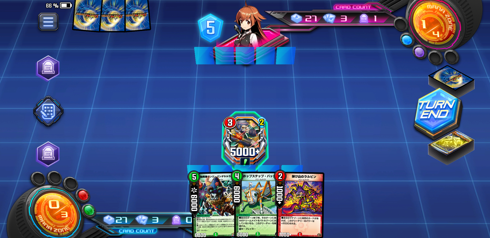

<!DOCTYPE html>
<html lang="ja">
  <head>
    <meta charset="utf-8">
    <meta name="viewport" content="width=device-width, initial-scale=1">
    <meta content=""><!-- ←ここに何のページか解説を書きます -->
    <title>ぎりレジェンドタッチできなかった火自然ドリームメイトデッキ</title>
    <meta name="twitter:card" content="summary_large_image"/>
    <meta name="twitter:site" content="@GoGoOctober"/>
    <meta property="og:url" content="https://pompomblink.github.io/dreammate.html"/>
    <meta property="og:type" content="website"/>
    <meta property="og:title" content="ぎりレジェンドタッチできなかった火自然ドリームメイト"/>
    <meta property="og:description" content="7弾環境ランクマッチでぎりぎりレジェンドになれなかったドリームメイトデッキです"/>
    <meta property="og:site_name" content="マナカーブは右肩下がり"/>
    <meta property="og:image" content="https://pompomblink.github.io/images/deck1.jpg">
    <link rel="stylesheet" href="css/styles.css">
  </head>
  <body>
    <!-- ↓ヘッダー -->
    <header>
      <h1><a href="index.html">マナカーブは右肩下がり</a></h1>
      <p>デュエルマスターズのビートダウンデッキ愛好家がカードを低姿勢で語るWebです。</p>
    </header>

    <!-- ↓メインコンテンツ -->
    <main>
      <h1>ぎりレジェンドタッチできなかった火自然ドリームメイトデッキ</h1>

      <div class="cards">
        
        <h2>あとちょっとだったのに……。</h3>
        <p>7弾最初のランクマッチ、ドルバロムカップ。</p>
        <p>個人的にデュエルマスターズで1,2位を争う思い入れのあるデッキ、ドリームメイトが参入した。</p>
        <p>転生編が中心となった6弾の流れから、「次はクロスギアが来るだろう」という多くの人の予想を覆し、実装された不死鳥編種族。</p>
        <p>しかもその中でもドリームメイトは唯一SR枠をひとつ獲得しているという謎の優遇っぷりを見せる。紙の方ではほぼダイナモ種族デッキとしてほかの種族に遅れを取っていたのが、感慨深い話である……。</p>
        <p>ドリームメイト愛好家を自負する以上、これはぜひともランクマッチで使い込みたいという気持ちから、粘りっこく環境にしがみつき続け……</p>
        <p>ドルバロムカップもあと2,3日で終わろうということでレジェンド近くまで2回ほどいけた（残念ながらこのあと悲惨な結果が待ち受けている）。</p>
        <p>現在ドリームメイトはあまり環境入りしているとは言い難いらしく、せっかくなのでデッキを公開することにした。</p>
      </div>

      <div class="cards">
        
        <h2>All Division  火自然ドリームメイト</h2>
        <p>ランクマッチフォーマットはAll Division。意外にも自分のドリームメイトはNew DivisionよりAll Divisionで成果を残すことができた。なんで？</p>
        <p>デッキ構成はほぼ同じなものの、NDでは一時1450付近まで10連敗以上する。何とかがんばって1500まで舞い戻るものの、その後はその付近をうろうろし、這い上がれない。</p>
        <p>ADでは不思議と勝率が高く、5.6連勝することもなかなか多い。</p>
        <p>天敵のアポロヌスドラゲリオンが少ないからか、もしくはADはカードプールが広いおかげで、ドリームメイトが刺さる何らかの要因があるのかもしれない。</p>

        <div class="cards">
          <h2>高パワーを活かしたデュエプレの新しいビートダウン</h2>
          
          <p>ドリームメイトがどのカテゴリのデッキに属するかを考えると、5~7ターン目に勝負を決める中速ビート（アグロ）に分類されやすい。</p>
          <p>強みとしてはやはりSRのケンジ・パンダネルラがアタックトリガーで後続のクリーチャーをコスト踏み倒し続けることと、大作家ゴリランボーやホップステップ・バッタンといったパワー6000以上のWブレイカー持ちが多いことだと思う。</p>
          <p>火自然や火光などの速攻が1~2コストのクリーチャーを多く並べるのに対して、ドリームメイトはそうした中型クリーチャーを素早く召喚して攻撃することができる。</p>
          <p>後年はその特徴が顕著で、大作家シバや密林の総督ハックル・キリンソーヤ、眠りの森のメイ様などが登場する。</p>
          <a href="https://dm-wiki.net/%E3%83%89%E3%83%AA%E3%83%BC%E3%83%A0%E3%83%A1%E3%82%A4%E3%83%88">デュエル・マスターズwiki  ドリームメイト</a>
          <p>ほかにも囚われのパコネコや森の特攻隊長ペンペン中尉などのおかげで、パワー4000以上のクリーチャーを展開しやすく相手クリーチャーの殴り返しやパワー参照除去に強い。</p>
          <p>これまでデュエプレには火単色速攻のヴァルボーグや、クイーンメイデンが高パワーWブレイカー獣として環境入りしているが、ドリームメイトもそれに近い。が、それらよりもデッキの平均パワーが高く、速攻デッキの弱点である地獄スクラッパーや炎槍と水剣の裁きに耐性がある。</p>
          <p>今回はその特徴を存分に活かし、切り札をケンジ・パンダネルラ、第2第3の切り札としてホップステップ・バッタンとゴリランボーを主軸にデッキを構成した。</p>
          <br>
          <h3>ヤッタルワンがえらすぎる</h3>
          <p>なんと言ってもヤッタルワンのマナブースト能力がこのデッキを回している。</p>
          <p>このデッキが最高に「ブン回った」とき、</p>
          <ul>
            <li>2ターン目ヤッタルワン</li>
            <li>3ターン目ホップステップ・バッタン</li>
            <li>4ターン目ケンジ・パンダネルラ</li>
            <li>5ターン目パワー6000Wブレイカー2体 + 踏み倒したドリームメイトで勝利</li>
          </ul>
          <p>となる。</p>
          <p>このパワー6000ラインを形成できるのが非常に強く、同コスト帯でランクマッチ環境ではクイーンメイデン・進化の化身・ツヴァイランサーが対処できる。</p>
          <p>デュエルマスターズにはコスト論といって、基本的にはパワー6000のクリーチャーはコスト6で6ターン目に召喚できるように設計されており、また同じくパワー6000のクリーチャーを確実に破壊できるのはコスト6のデーモン・ハンドからになってくる。</p>
          <a href="https://dm-wiki.net/%E3%82%B3%E3%82%B9%E3%83%88%E8%AB%96">デュエル・マスターズwiki コスト論</a>
          <br>
          <p>コスト論をオーバーするのが、転生プログラムや母なる大地といったデュエプレでは許されない有名な殿堂入りカード群になる。</p>
          <p>このコスト論がデュエマの隠れたセオリーになっているわけだが、このパワー6000のクリーチャーたちを現実的に3ターン目から展開してしまえるのがドリームメイトなのだ。</p>
          <p>例えばホップステップ・バッタンはヤッタルワンから3ターン目に召喚できるクリーチャーで、全体が上方修正を受けたドリームメイトのなかで下方修正（パワー7000→6000に弱体化）されたカードだ。明らかに警戒されているし、実際紙のまま実装されていたらまずいカードだと思う。</p>
           
          <p>ほかにもゴリランボーも3ターン目に進化し、パワーアタッカーで6000Wブレイカーになる。ケンジ・パンダネルラもパワー6000でバトル身代わりができてしまうし、レッドジャッカルはすべてのドリームメイトをアタックトリガー付与でパワー6000ラインを形成できるようになる。</p>
          <p>こうしてみるとドリームメイトのパワー6000ラインは非常に意識してデザインされているのがわかる。</p>
          <p>おかげでバトルでは負けないためグレートメカオー相手にもガンガン攻められるし、速攻の天敵地獄スクラッパーも効かない場面が多い。ソーラーコミューンでタップされてもパワーが高くて殴り返すのが大変だ。</p>


        </div>

        <div class="cards">
          <h2>ドリームメイトの弱点</h2>
          
          <h3>こんだけ書くとすごい強そうに思うじゃん？</h3>
          <p>いや全然弱くはないし、そこそこ強いからマスター帯で通用するのだと思う。</p>
          <p>が、ドリームメイトはほかのビートダウンデッキにないパワーを持つ反面、<strong>単体除去に弱い</strong>という欠点があるのだ。</p>
          <p>ヤッタルワンからバッタン、ケンジパンダネルラにつなぐ場合、マナブーストで手札を2~3枚消費する。またゴリランボーも2コストのドリームメイトから進化しているため、実質2枚のカードを消費していることになる。</p>
          <p>この切り札たちがシールドトリガーでデーモンハンドをくらってしまうと、簡単に2~3枚相当のカードを失ってしまうのだ。</p>
          <br>
          <p>火自然の速攻デッキは手札補充手段がない。</p>
          <p>ブロッカーも基本的にいないので、コスト論的に相手に6コスト以上のカードを使われると一気に不利になる（コスト6から相手のカード2枚以上破壊できるカードが一気に増える）。なので4~5ターン目に決着をつけなければならない。</p>
          <p>つまり初期手札5枚と5ターン目までにドローする5枚、合わせて<strong>たった10枚のカードで相手を倒さなければならない</strong>ことになる。</p>
          <p>多くの速攻が3~4枚をマナに回し、6~7体のクリーチャーで5枚のシールドを割りダイレクトアタックにもっていく。</p>
          <p>一方、高パワーが売りのドリームメイトはケンジパンダネルラを召喚できるように10枚中5枚をマナに置く。そして2~3枚のリソースを集中させてゴリランボー、バッタン、ケンジパンダネルラを召喚する。</p>
          <p>つまりこれらがもしデーモンハンドもしくは何らかの要因で除去されると、こちらとしては残り2~3枚のカードで戦わなくてはいけなくなってしまう……。</p>
          <p>あなたならできると思うだろうか？</p>
          <p><strong>除去サファイアやブリザード、メカオーを相手に2コストバニラ2~3枚を使って、あと2ターン以内にシールド2,3枚割って勝つことが……。</strong></p>
          <p>正直相当厳しい。</p>
          <p>ならデーモンハンドを持っている相手には2コストクリーチャーを多面展開して戦うのが良さそうなのだが、デーモンハンドを入れている相手は大抵地獄スクラッパーやヘブンズゲートも入れている……。</p>
          <p>現状のドリームメイトの2コスト、3コストも弱いわけではないが、これらだけで戦うとなると速攻・ブリザードの下位互換に近い。</p>
          <p>デモハンを警戒して多面展開するか、一か八かシールドから踏まないよう祈ってバッタでいくか……。毎回毎回非常に頭を悩まされている。</p>
        </div>

        <div class="cards">
          <h2>こちら以上に高パワーを展開できるやつらのせい</h2>
          
          <h3>おめーらだよ</h3>
          <p>ドリームメイトは5ターン目までにパワー6000ラインを形成してシールドを割り切るデッキだと解説した。</p>
          <p>だが、7弾環境では同じように5ターン目頃に高パワークリーチャー展開し相手を圧倒するデッキが存在する。</p>
          <p>そう、ツヴァイランサーとアポロヌスドラゲリオンである。</p>
          <p>ツヴァイランサーも5ターン目までには15枚近くのカードをドローし、ブロックされないパワー13000のTブレイカーを複数体並べ、果てには呪文を無効化するギガブリザードまで召喚してくる。</p>
          <p>ドリームメイトではもはや対処できないため、相手がツヴァイランサーを展開してくる前にシールドを割り切り決着をつけたい。</p>
          <p>が、その結果割ったシールド分+5枚の計20枚の手札が相手に渡るため、ほぼ確実にツヴァイランサーでのカウンターを食らう。かといってシールドを割らずに体制を整えようにも結局ツヴァイランサーはでてくる。どないせっちゅーねん</p>
          <p>アポロヌスドラゲリオンもルピア→センチネルドラゴン→センチセンチバルケリオス→進化で5ターン目にワールドブレイクで止めを刺してくる。</p>
          <p>ドラゲリオンはツヴァイランサーほどのドロー能力はないため、ルピアが登場しなければこちらに勝機は見えるが、同じく5ターン目には相手もデッキ40枚中20枚近いカードを手にしているため、コンボパーツはほぼ集まる。</p>
          <p>さっきからこちらが5ターン目にシールドを0にできている前提で書いているが、もしトリガーを踏んだりヤッタルワンを引けていなければ7ターン目までシールドは割り切れていない。</p>
          <p>如何にこちらがガン回りした上で相手の（ほぼありえないような）事故を祈って戦っているか、おわかりになっただろう。</p>
          <p>スピード・パワーともに完全に相手が上。</p>
          <p>ツヴァイ・ドラゲリオン >>>>>>>>>> ドリームメイト</p>
          <p>だと思っている。</p>
          <p>もはやこの2種類の環境デッキから勝ちをもぎ取るには、こちらのシールドにアポカリプス・デイが埋まっていることを祈ることしかできない。</p>
          <p>アポカリプスデイはツヴァイランサー、ドラゲリオンに特に有効なシールドトリガーとして7弾環境でも多く採用されているが、ドリームメイトもこのトリガーのお世話にならないと滅多に勝てない。</p>
          <p>相手もデッキのリソースをありえないテンポで稼いで展開するため、一度でもアポカリプスデイが当たれば相手の動きは一気に止まり、2コストバニラのドリメでも勝機が見えてくる。</p>
          
          <p>ちなみにドリームメイトではアポカリプス・デイが発動することを「夢オチ」を呼ぶようにしている。</p>
        </div>

        <div class="cards">
          <h2>ただしほかのデッキには常にワンチャンあるのが楽しい</h2>
          <h3>トップをねらえ！</h3>
          <p>上記2つのデッキはもう夢オチを期待するしかないが、ADのほかのデッキには引き次第でワンチャンを狙えるのがドリームメイトの面白いところだと思う。</p>
          <p>火を入れてあるため、ケンジパンダネルラからスピードアタッカーのリンパオや、ブロッカーを破壊するサージェントクワガタン、追加のバッタンの可能性があるおかげで逆転の可能性がある。</p>
          <p>相手からすれば、回ったときはデッキトップで解決してるだけに感じるかもしれないが、がんばってトップで解決できる状況を作っているということで勘弁してもらいたい。</p>
          <p>うちの火自然ドリームメイトの対面の有利・不利はだいたいこんな気分でいる。</p>
          <ul>
            <li>メカオー  互角</li>
            <li>天門  互角</li>
            <li>カチュア  互角</li>
            <li>グールジェネレイド  互角</li>
            <li>アウゼス  ちょっと有利</li>
            <li>除去サファイア  ちょっと有利</li>
            <li>ブリザード  不利</li>
            <li>ツヴァイ  不利</li>
            <li>アポロヌス  不利</li>
            <li>速攻  絶望的</li>
          </ul>
          <p>現状、実は速攻対面が一番厳しいのだが、数が多くないうえにデッキタイプが違うので納得している。</p>
          <p>ツヴァイとアポロヌスは同じ中速域が勝負のデッキなのに差が圧倒的すぎて悲しい。</p>
        </div>

        <div class="cards">
          <h2>可能性の獣たち</h2>
          <p>長くなったが、自分なりのドリームメイトのランクマッチを少しは語れたかと思う。</p>
          <p>ほかの方のレシピを見ると自然光の構成や水のドローを入れた構成、はたまた4cドリメまで拝見できて、とても参考にさせていただいている。それらを知るまでは現状火自然の一択だと考えていたため、かなり興奮させてもらった。</p>
          <p>カードが公開された段階ではマスター帯でも活躍できるのか不安だったが、それは杞憂だった。マスター帯で同じドリームメイトに当たることは滅多にないが、心の中とエモートで応援している。</p>
          <p>ただレジェンド帯で活躍している話をなかなか聞かないため、もしそんなドリームメイト使いの方がいたらぜひ立ち回りを教えていただきたい。</p>
          <p>また、ドリームメイトはまだまだ可能性を残したデッキでもある。</p>
          <p>今後囚われのパコネコや盾髪の賢者レオルド、各進化クリーチャ―などの重要カードはほかの種族同様にお預けをくらっている状態のため、手元にケンジパンダネルラがいるようならぜひ分解せずにキープをおすすめする。</p>
          <p>可愛い容姿でマッチョな戦略を立てるドリームメイトの魅力はこんなものではないぞ。</p>
        </div>

        <div class="cards">
          
          <p>さ〜て、最後にレジェンドいって終わりにしますか……</p>
          <p>（なお、このあと半日かけて丁寧にレートを80溶かした模様）</p>
        </div>
      </div>

    </main>

    <!-- ↓フッター -->
    <footer>
      <div class="top">
        <a href="index.html"><p>TOPへ</p></a>
      </div>
      <div class="bottom">
        <p>十月いつか 2020</p>
      </div>
    </footer>

  </body>
</html>